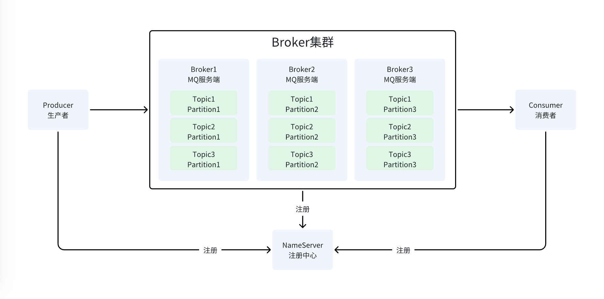

我们从顶层视角逐步拆解一下RocketMQ的架构组件设计。
RocketMQ是当下工业界使用最广泛、可靠性最强、性能较高的一款分布式消息队列，其架构设计、源码有很多值得我们学习的地方，本文，我们先来了解一下它顶层的组件。
最基础的组件
最主流的MQ像Kafka/RocketMQ都采用了这种基础设计，即：
Producer负责生产消息；Broker负责存储消息；Consumer负责消费消息；
Broker集群化
Broker作为MQ的核心角色，其肩负了一款分布式存储的「高性能」「高可用」等核心指标，对于上图中的单点，很明显存在单点故障的瓶颈。
因此，RocketMQ通过集群化Broker的方案来解决服务端的单点问题。
通过Topic组织消息分布
Broker核心负责存储消息、服务端高可用。对于消息的组织、分布，Kafka/RocketMQ都通过Topic来管理。
即一条消息属于谁，一定能找到对应的一个Topic。
而一个Broker内，存在许多的Topic。
通过MessageQueue提高Topic扩展性
如果一个Topic负责所有的消息生产、存储、消费，很容易产生瓶颈：
- 首先是生产与消费完全是单通道的；
- 其次是对于多个
Topic在Broker上的分布是不均衡的，即多个Topic存储会存在数据倾斜「data skew」的问题；
对于上述问题，Kafka/RocketMQ都使用了同样的方案，即引入一个中间层进行解耦、扩展。
David Wheeler 金句：「计算机科学领域的任何问题，都可以增加一个间接的中间层来解决。」
Kafka中的这一层叫做Partition分区，RocketMQ中的这一层叫做MessageQueue队列。分区更具有通用性，因此图例中我使用Partition，读者理解这里的含义即可。
通过增加中间层，在进行消息的管理时，就可以进行多个分区间的负载均衡、存储均衡。
通过主从提高Broker可用性
上面的架构，依然存在会丢消息的问题，即使引入了分区，单个Broker挂掉的时候，多个Topic的同一分区数据都会丢失（如果强制持久化就不会丢失）。
请记住，数据不丢失的可用性问题一般解决的方案就两个：
- 数据持久化；
- 数据冗余+复制；
这里我们着重想强调的是数据复制，即RocketMQ低版本中使用的方案是对Broker进行主从复制：
通过Dleger Raft架构提高Broker可用性
主从架构其实足够简洁，并且在大多数情况下，其可用性是非常高的，并且成本非常可控。
但是公司大了之后，集群资源过多，并且业务场景也更加复杂。这时候主从架构有一个缺点，就是主节点遇到故障，Broker集群无法自动故障切换。
这时候就轮到分布式共识协议登场了，在RocketMQ中使用了名叫Dleger的架构，其本质上是实现了一套Raft共识协议。
大部分大型分布式存储集群，都是通过 Raft 这种协议来实现集群自治的。比如我多年前学习的 ElasticSearch 也是使用了同样的方案。
这种共识协议定义了集群中节点的角色，更重要的是，其定义了主节点挂掉后自动选举新主节点的机制。
具体的机制流程本文不做赘述。
Dleger架构如下图，核心优势是相较于主从复制架构增加了集群自选主自治，故障切换可以做到自动化（大大减少我们SRE on-call的工作量）。
通过注册中心管理Broker集群
前面我们通过Broker集群解决了单点问题，同时增加了主从复制来提高数据的可用性。
但是我们生产消息与消费消息的时候，程序与哪个Broker交互呢？
答案是引入一个注册中心，来协调分布式的Broker集群。

注册中心维护了整个RocketMQ集群的核心元数据：
- 集群的
Topic列表； Topic的各分区（MessageQueueorPartition）与各Broker节点的关系；Broker节点的存活状态；
当业务服务端与RocketMQ交互时，仅需关心Producer、Consumer API即可。
NameServer集群化
上面的NameServer同样存在单点问题，无他，还是通过集群的方式来提高可用性。
小结
以上，我们渐进式了解了RocketMQ的核心组件设计，读完本文，对这些组件、解决方案有个大致印象即可。
理解每个组件的设计用意才是关键。